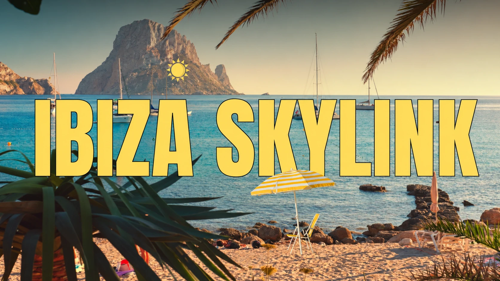

Ibiza Skylink
A new perspective on getting there.

The project
A suspended-train concept connecting Ibiza’s nightlife, beaches, and airport, with a journey as vibrant as the destination. The collaborative pitch explores how an attraction could address visitor transportation while becoming part of the island experience, from daytime coastal views to colorful nighttime journeys.
- Context
- CTIN 252 · Themed Concept Development Pitches
- Creative focus
- Concept development
Themed transportation
Route planning
Guest experience - Contribution & credits
- Developed by Silvia Schohn, Jenna Bortnick, and Jasmine Wan. Original concept by Silvia Schohn and Sammy Hillery. Jenna’s individual responsibilities are being confirmed.
Connecting day and night
The presentation maps daytime attractions, nightlife destinations, the airport, and existing road connections to frame the transportation challenge. These maps document research for the course concept.
A journey worth taking
The proposal treats transportation as an attraction in its own right. Suspended-rail precedents and colorful vehicle references inform possibilities for the guest experience.
Along the route
Concept visuals explore suspended trains in coastal and nightlife settings. Destination photographs and interior references establish the atmosphere of the proposed experience.
Room to grow
The academic proposal considers taking visitors off the roads, managing crowds, and making travel more accessible. VIP cars and local pop-ups extend the concept. Fares and operating benefits shown in the slides are proposal assumptions, not a live transport service.
Selected presentation pages are shown in their original context. Collaborative work and reference imagery are identified in the project credits and captions.